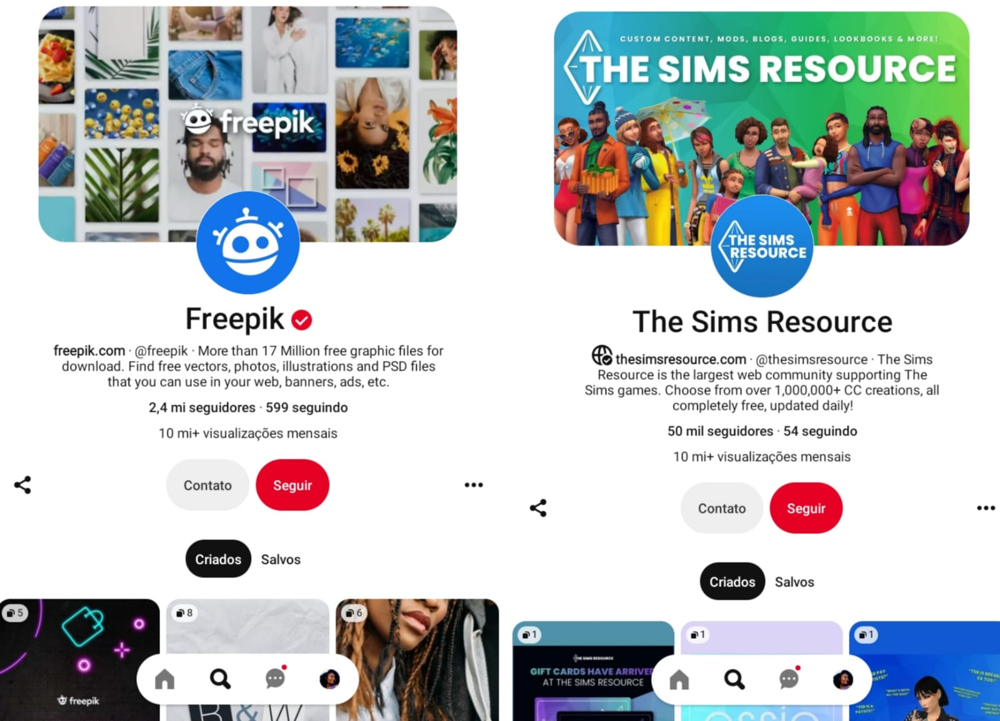

Créditos da Página
Este site é o resultado do trabalho de web que foi feito pelas alunas Yohana, Ana Flavia e Renata o primeiro ano de Redes de Computadores no Cefet MG. As imagem com direitos autorais desse site foram tiradas:
- Do pinterest
- Do google
- E do youtube
O restante das imagens foram produzidas no Canva ou então são fotos tiradas pelo proprio jogo enquanto criavamos a personagem
Casas
As casas foram retiradas do canal da Mawina, do Plumbob Kingdom e do MTsims.
A casa moderna principal foi feita pelo Plumbob Kingdom: A casa na praia é criação da Mawina: A casa no penhasco também é criação da Mawina: E já casa de veraneio foi feita pelo MTsims:
Imagens retidas do pinterest
As flores azuis que estão presentes em praticamente todas as paginas foram retiradas do pinterest e pertencem ao perfil Freepik e já as imagens da "Charlotte" também foram retiradas do pinterest porém são do perfil: The sims Resource
Autoras/Desenvolvedoras do site
Como dito antes esse site faz parte de um trabalho pratico que foi realizado por nós, o intuito era fazer muito mais, no entanto ficamos felizes com que fizemos, pudemos colocar em pratica muito do que aprendemos durante o ano e até mesmo descobrir outras funcionalidades que nunca tinhamos ouvido falar. Por último, muito obrigado pela sua visita e aqui tem uma montagem ( feita no canva) com a gente: